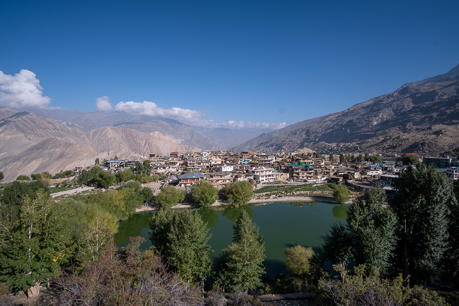

Day 1: Sourcing Bikes in Delhi
Rental motorbikes are most plentiful in the Karol Bagh area of Delhi. It's worth visiting multiple shops to compare available options and pricing.
Rental motorbikes are most plentiful in the Karol Bagh area of Delhi. It's worth visiting multiple shops to compare available options and pricing.
The key to getting out of Delhi is getting out of Delhi as fast as you possibly can, preferably before sunrise so you can "beat" traffic. But don't worry, you'll find plenty of insane traffic on the way north towards Chandigarh!

Chail is a small mountain town without a lot going on, but if you want to avoid the traffic and potential parking issues presented by a visit to the much bigger city of Shimla, it's a suitable waypoint for your first night out.
Unfortunately for us, Shimla was unavoidable, as my rented Royal Enfield Himalayan's battery quit on us after just one day of riding. After fuse checks and phone calls to the rental shop, we push started the bike and backtracked somewhat to Shimla to find a motorbike repair or parts shop that could replace my bike's battery.
Once the battery was replaced, the bike fired right up and we headed east again, towards the Sutlej River valley.
We stayed the night in Sarahan, a small town perched over the valley. A lovely couple with a clean and pleasant homestay hosted us for the night and fed us dinner and breakfast.
The first part of this day's ride is all following the Sutlej River as you head east along the valley. The landscape is dramatic and the mountains high, but this is not yet part of Spiti Valley, but a more populated part of Kinnaur district.
At the Karcham Bridge, you will see the confluence of the Baspa and Sutlej rivers, and will follow the Baspa River up into the Sangla Valley. This road is generally a single lane with two-way-traffic, and is more often than not a cliffside road with more blind corners than you can count, often no guard rails, and has variable surfaces that don't always allow for predictable acceleration / braking.
Chitkul is known as the "Last Indian Village" as it's the furthest place you can reach in this valley - further civilian movement toward the Indo-Tibetan border is restricted.
The only logical path from Chitkul is back from whence you came, on the same road you experienced the previous day. Only this time you get to ride it even closer to the cliff's edge, since India is a left-hand traffic country.
To continue east / northeast into Spiti Valley, one must apply for and receive a transit permit from the government office in Reckong Peo. With respect for how unpredictable some of these provincial government offices can be, we opted to spend the night in Kalpa (just above Reckong Peo) to allow more than enough time for permitting.
There are no gas stations between Reckong Peo and Kaza (and no guarantee that fuel would even be available in Kaza), so we each filled our 5L jerry cans in Reckong Peo before moving out.
As usual, the day proved unpredictable, and within 1-2 hours of leaving Reckong Peo, we got stuck behind scheduled avalanche blasting for around 3-4 hours on the only road to Spiti Valley. This resulted in driving in the dark for most of the ride to Nako. Thankfully, a big bright moon was out that night, it would have been a tough journey without it!

Technically the Khab Sangam Bridge is where you first encounter the Spiti River and enter Spiti Valley, but Nako is generally the first stop in Spiti.
We stayed in a simple guesthouse in Nako run by a woman with Tibetan features and clothing. The landscape and the people who lived in it were changing.
The primary scenic attraction in Nako is the man-made blue-green reservoir lake, worth a morning visit for a few minutes.
The sun was out this day and the roads were fairly well paved, plus we finally felt that we were finally in the place that had seemed so far some days, weeks, months ago. The mood was good and the views were great this day.
Our one stop en-route to the town of Tabo, was the village of Gue, where one can see the well-preserved mummified remains of a 500-year old Tibetan Buddhist monk.
After a visit to Gue, we proceeded to Tabo for the night. Tabo is known its monastery, which was founded in 996 CE and is noted for being the oldest continuously operating Buddhist enclave in both India and the Himalayas.
Dhankar Monastery (elev. 3,894m / 12,774 ft) was founded between the 7th and 9th centuries and is a logical stop en route from Tabo to Kaza.
Mud Village is a tiny little place with absolutely stunning scenery. Mud is the final waypoint in Pin Valley, unless you're planning on trekking over the mountains into neighboring Parvati Valley, which I'm sure is quite an adventure.
Leaving Mud Village, one proceeds back towards Spiti Valley's main road, and then north a bit to get to Kaza, which serves as the commercial and administrative capital of the region.
One of the highlights of being in Kaza is that you have good access for day trips to a variety of small scenic villages that sit high above Kaza, and day trips mean taking all the heavy luggage off the bikes and traveling light for once.
I took full advantage of the post office in Hikkim, which is the highest elevation permanent post office in the world. My post cards arrived back in the states within around two weeks. Impressive speed, considering how remote this place is!

Key Monastery is just down the road from Kaza and is one of the big photographic highlights of any Spiti Valley trip.
With additional time, interest and will, one can proceed up into the mountains again for a few more village visits to places like Chicham, Kibber and other small places.
Even though this day only covered a relatively short distance, it's still a big day.
The big moment of the day is crossing over Kunzum La Pass, the big mountain pass on the route, which reaches an altitude of 4,551 m / 14,931 ft.
Chandrataal is quite remote and a visit there usually involves an overnight stay in a tent camp like the below. Temperatures can get bitterly cold and it's not uncommon to find that your motorbike seat has iced over by morning.
The tent camps are a bit removed from the lake itself, so a very bumpy trail ride was on order first thing after getting out of bed. The lake was in full shadow when we arrived, and we did not have time to stay until the sun crested the mountains.
Chandrataal to Manali is probably the most challenging riding day of a traditional Spiti Valley motorbike trip - the road is not paved and often feels more like double track riding. Depending on what time of year you're riding here, you may be driving through puddles or rivers for much of the day, much of it on particularly bumpy and/or loose surfaces. This is a particularly great place to drop or drown a bike. Since most water crossings in Spiti Valley are fed by melting snow, be sure to cross this corridor before it's late in the day.


Crossing Rohtang La Pass is often the final challenge for any rider returning from a Spiti Valley or Ladakh loop.

But both the northern and southern sides of the pass can often be full of surprises. One moment you're cruising along on perfect new tarmac, the next you're on a muddy, rocky outcropping surrounded by a flock of sheep.

Arrival in Manali means the rider can get some rest, access a variety of food and services that were harder to find in Spiti Valley, maintain the bikes, and consider what's next.